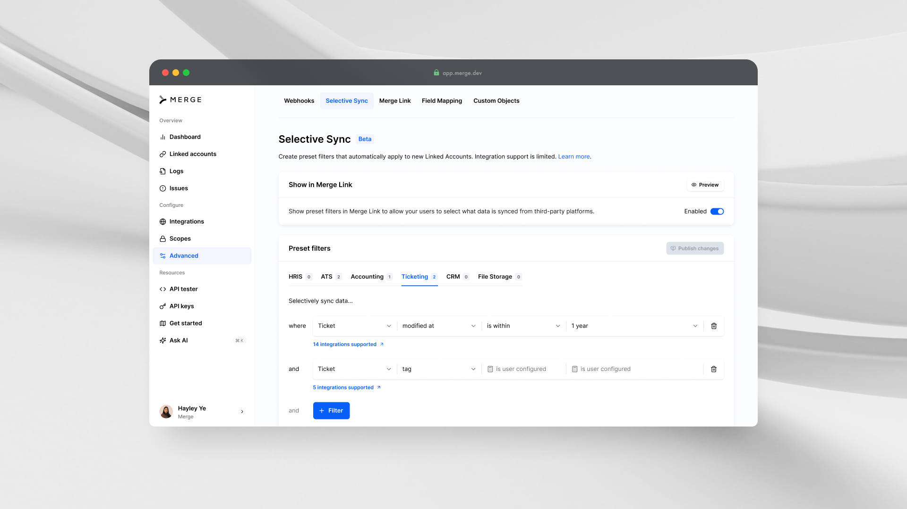

Selective Sync
Merge, 2024
Empowering enterprise customers with smarter, scalable data filtering to sync only what matters.
Project Overview
To support and sell to larger enterprise customers, Merge needed to be able to sync large amounts of customer data efficiently and securely. The existing syncing process often pulled all available records, much of it irrelevant, resulting in long sync times, higher costs, and unnecessary exposure of sensitive data.
I led the end-to-end redesign to make Merge's Selective Sync product a more discoverable, useful, and scalable way to filter data shared with Merge.
The Challenge
Merge faced three main issues when working with enterprise data:
- Performance: Initial syncs for an account could take 12+ hours due to large data volumes, during which time the customer and end user has no visibility into what is happening
- Cost: Syncing unneeded data increased infrastructure and security costs for Merge
- Privacy: Security-conscious customers needed granular control to exclude sensitive PII (Personally Identifiable Information)
Although Merge already offered a data filtering feature, adoption was low because the filters were too limited and the user experience was confusing. My challenge was to redesign Merge's filtering experience to increase adoption and limit the data that Merge syncs to only recent, relevant data.
My Role
I was the sole product designer on this project, responsible for leading the end-to-end design process from user research to prototyping and final handoff. I collaborated closely with a cross-functional team that included a product manager, post-sales, platform engineers, and software engineers.
User Personas
I developed two key personas to help identify and better understand user needs and goals.
Existing Merge customer
This user is an integrations or IT admin at a current Merge customer. They are responsible for managing multiple Linked Accounts within Merge.
User needs:
- They need fast and reliable syncs so that their team has up-to-date data without long delays
- They value clear controls and transparency to see what filters are applied at any given time and easily adjust them if requirements change
- They're busy, so they prefer defaults and clear presets that just work for 80% of cases but still allow overrides for edge cases
Enterprise prospect
This user is a security or compliance decision-maker at a large enterprise company evaluating Merge as a solution for integrations. They are responsible for ensuring that any vendor can meet strict data security and privacy requirements before signing a contract.
User needs:
- They need to guarantee that only approved data is ever pulled into Merge's systems
- They want granular control over what gets synced to avoid exposing sensitive PII
- They need flexibility for end-users to provide consent where required
Research
We discovered that the existing Selective Sync feature had 79 active filters available, but many were completely unused by customers, and many more were only used by a single customer.
Through customer conversations, we uncovered three main insights:
- Many users didn't even know they could set up filters because the feature was buried and hard to find
- Users who did find it often didn't use it because the filters they needed didn't exist for their specific use case
- Most customers only needed recent data from just the last 6–12 months
Building these filters is technically complex — each one must be created individually by Merge's platform engineering team, since the filter logic depends on how each third-party integration works. This meant we needed to be strategic, starting with the highest impact integrations in a single category to prove value before investing more engineering time to expand coverage.
To prioritize, we ran data analyses to identify which categories contained the most stale data. Ticketing and ATS stood out as the biggest opportunities, with a high percentage of data older than a year that could be excluded by filtering. We then mapped the integrations within those categories with the highest usage to ensure our initial filters would benefit as many customers as possible.
| Common Model | Total rows stored by Merge | % before Jan 2024 | % before Jan 2023 | # before Jan 2023 |
|---|---|---|---|---|
| TCKT Tickets | 139,450,053 | 84% | 64% | 50M |
| ATS Candidates | 158,436,710 | 84% | 55% | 71M |
| CRM Contacts | 116,554,310 | — | — | — |
| ACCT Invoices | 37,186,522 (low impact) | — | — | — |
Numbers as of July 2024
Ticketing high usage integrations: Jira, Zendesk, Clickup, Freshdesk, Asana, Intercom, Linear, Trello
Ideation & Solution
To solve the problems and user needs we uncovered, I worked with the product and engineering to deliver a more visible, flexible, and scalable filtering experience. The redesigned Selective Sync combines clearer placement in the product, research-backed defaults, flexible user controls, and new internal tools to serve enterprise customers more securely and efficiently.
1. Selective Sync tab in each Linked Account
The sync filters feature was previously hidden inside each Common Model for a Linked Account. Users had to expand each accordion and configure filters for each model separately.
Old design: Sync filters in Linked Account Overview
Old design: Edit sync filters in new screen
We added a dedicated Selective Sync tab within each Linked Account to make the feature more visible. Users can now see and manage all filters applied to an account in one place, giving them a clear at-a-glance view and easy configuration.

Adding Selective Sync filters for a Linked Account
2. Default timestamp filters
We introduced default timestamp filters that apply automatically when an account is connect to filter out records older than a given date. This reduces initial sync times by excluding stale data up front and increases Selective Sync adoption by applying best-practice filters without requiring any manual setup. While these filters apply automatically to new accounts, users still have the flexibility to adjust or override them at the organization or account level.
As mentioned in the previous section, we launched this feature with just the Ticketing category because of engineering bandwidth constraints. The goal is to eventually add default filters for all categories.
Plan gating and upselling
Although Selective Sync is an Enterprise plan feature, we implemented default timestamp filters for all Merge users to reduce infrastructure costs. This became an opportunity to upsell and encourage Free and Launch customers to upgrade:
- On Free and Launch plans, customers can adjust the default date range in the dashboard, but can't delete the filters or add other filter types
- On the Enterprise plan, customers and end users have full flexibility: they can edit, remove, or add any filters they need

Linked Account-level Selective Sync filters for Free/Launch plan

Organization-level Selective Sync filters for Free/Launch plan
Relative timestamps
Due to engineering limitations, we determined that it made the most sense for default organization-wide filters to have relative timestamps, such as 6 months or 1 year, but for the same filter to be static when applied to a specific account, based on when the account is connected.
Timestamps are based on time of linking

Relative timestamps for organization-level filters (Enterprise plan)
Frigade announcement modal
To ensure customers knew exactly what was happening, we added a modal in the dashboard using Frigade's announcement component to notify users of the new default filters. This increased visibility and made sure there were no surprises for customers when syncing their data.
Frigade announcement modal
3. User-Configured values in Merge Link
To give customers maximum flexibility, we also added support for user-configured filters. This surfaces the filters in Merge Link and allows end users to control exactly what data is synced by setting their own values when connecting their account. A customer can choose is user configured as their filter type to let each of their end users decide what data should sync based on their specific needs. This approach makes Selective Sync even more scalable and privacy-friendly for security-conscious customers.
Selective Sync in Merge Link
4. Internal Filter Builder
We developed a new internal Filter Builder tool to enable Merge's platform engineers to more easily build and maintain filters for new data models and integrations, helping scale support as the feature grows. This is a separate project that is available upon request.
Final Design
The final redesigned product brings all these solutions together into a cohesive experience that balances automation with control. The new Selective Sync tab makes filters discoverable and easy to manage for every Linked Account. Default timestamp filters now apply automatically to help customers sync only relevant data, with clear plan-based permissions that drive upsell opportunities. The Frigade announcement modal keeps users informed, so there are no surprises when new defaults are rolled out.
For advanced needs, end users can configure their own filters directly in Merge Link for maximum flexibility, and the new internal Filter Builder enables Merge's platform engineers to efficiently expand filter coverage as customer needs grow. Together, these improvements make Selective Sync a powerful yet easy-to-use feature that scales with Merge's enterprise customers.
Insights & Impact
What We Learned:
- Balancing flexibility, privacy, and performance is critical. Default filters save time and reduce costs, but giving users the ability to adjust or override them is what builds trust and supports enterprise security and compliance needs
- Visibility and simplicity drive adoption. Even the best filters won't be used if they're buried or too complicated to set up. Making Selective Sync more discoverable and easy to configure turned a rarely used feature into one that now delivers real performance and cost benefits for Merge and its customers
Results
- Ticketing default filters reduced initial sync times by 30%
- Merge secured contracts with major privacy-sensitive customers
- Increased scalability of Selective Sync overall